Key Metrics
The Problem
Retail data arrives from disconnected sources — in-store POS systems, e-commerce events, and an inventory database — each with its own format and cadence. Batch-only pipelines leave stock, sales, and demand signals stale by the time analysts and downstream services see them.
The platform needed a unified streaming path: capture every change at the source, process it with dedicated stream engines, and serve fresh features to forecasting, segmentation, and recommendation workloads behind a single API.
Architecture
Hover or tap any component to see details

Approach & Implementation
- Ingest: POS systems plus e-commerce events and inventory DB changes feed Kafka topics, Debezium CDC 2.3, and a REST ingest path.
- Stream processing: Spark 3.4 Streaming and Flink 1.17 run the streaming transforms (dbt per README) over the Kafka event backbone.
- Storage: Curated output lands in Delta Lake on MinIO, with PostgreSQL 15 and Redis 7 serving operational and low-latency reads.
- Serving & ML: FastAPI behind Nginx exposes the data, with Jupyter/ML workloads for forecasting, customer segmentation, and recommendations.
- Observability: Prometheus and Grafana monitor the pipeline end to end.
- 15 compose services: zookeeper, kafka, postgres, redis, spark-master, spark-worker, flink-jobmanager, flink-taskmanager, api, prometheus, grafana, Debezium, nginx, minio, jupyter.
Challenges & Solutions
Challenge: Heterogeneous sources
POS, e-commerce events, and inventory tables each change in different ways, making a single batch pull unreliable for fresh analytics.
Solution: Kafka + Debezium CDC ingest
Standardized all change capture on Kafka topics with Debezium CDC 2.3 for the inventory database plus REST ingest, so every source streams through one backbone.
Challenge: Dual-engine orchestration
Running Spark and Flink side by side with 15 containers raises coordination and monitoring overhead.
Solution: Composed platform with unified observability
Packaged all 15 services in Docker Compose with Prometheus and Grafana, keeping Spark 3.4 Streaming, Flink 1.17, Delta Lake on MinIO, PostgreSQL 15, and Redis 7 observable from one place.
Outcome
The platform unifies POS, e-commerce, and inventory change streams into Delta Lake, PostgreSQL, and Redis, served through FastAPI and Nginx with Jupyter-based forecasting, segmentation, and recommendation workloads.
CDC via Debezium and dual Spark plus Flink stream processing give the pipeline a dedicated streaming path from source change to served API. Local project — no public GitHub link.